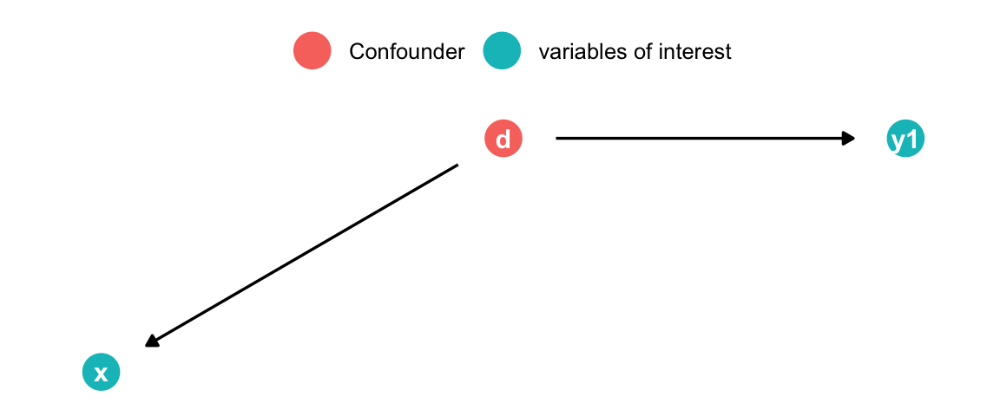
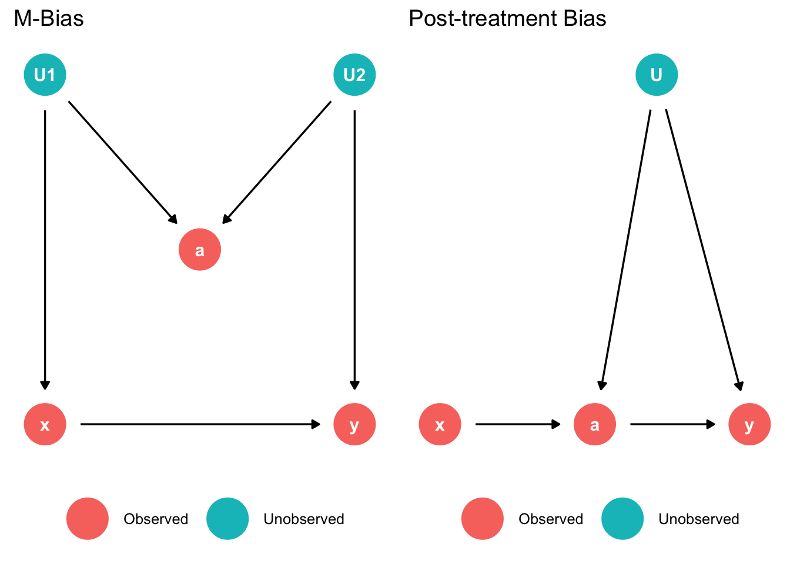

{kind=link}
library(ggplot2)
library(scales)
time_series_ggstyle <- list(
scale_y_continuous(labels = label_number(scale_cut = cut_si(' ')), expand = c(0, 0.1)),
theme_bw(base_size = 20),
theme(
axis.title.x = element_blank(),
panel.border = element_blank(),
axis.line = element_line(color = "black"),
legend.position = 'top'
)
)Modeling
Getting into modelling!
Required skills
- Data-science teams have different skill requirements:
Types of analyses
- Four types of data stories:
- Descriptive - What has happened?
- Predictive - What will happen?
- Causal - Why does it happen?
- Prescriptive - What actions should be taken?
Setup: ggplot2
- Import required packages
- Define a list of layers for consistent styling throughout the project
Descriptive
Attaching package: 'readr'The following object is masked from 'package:scales':
col_factor── Attaching core tidyverse packages ──────────────────────── tidyverse 2.0.0 ──
✔ dplyr 1.1.4 ✔ purrr 1.0.2
✔ forcats 1.0.0 ✔ tibble 3.2.1
✔ lubridate 1.9.3 ✔ tidyr 1.3.1── Conflicts ────────────────────────────────────────── tidyverse_conflicts() ──
✖ readr::col_factor() masks scales::col_factor()
✖ purrr::discard() masks scales::discard()
✖ dplyr::filter() masks stats::filter()
✖ dplyr::lag() masks stats::lag()
ℹ Use the conflicted package (<http://conflicted.r-lib.org/>) to force all conflicts to become errors
Attaching package: 'data.table'
The following objects are masked from 'package:lubridate':
hour, isoweek, mday, minute, month, quarter, second, wday, week,
yday, year
The following objects are masked from 'package:dplyr':
between, first, last
The following object is masked from 'package:purrr':
transposeoptions(scipen = 99999)
charts <- fread("data/charts_at_global.csv.gz")
ts <- str_detect(tolower(charts$artistName), "taylor swift")
charts_ts <- charts[ts, ]
filter(charts_ts, format(day, "%Y") == "2019" & region == "global") |>
group_by(day) |>
mutate(streams = sum(streams)) |>
ggplot(aes(x = day, y = streams)) +
geom_line() +
scale_x_date(
breaks = seq(as.Date("2019-01-01"), as.Date("2019-12-31"), "month"),
date_labels = "%b"
) +
geom_vline(xintercept = as.Date("2019-08-23"), color = "red") +
annotate("text", x = as.Date("2019-08-20"), label = "Release of 'Lover'", y = 40000000, colour = "red", angle = 90, size = 8) +
ggtitle("Taylor Swift Streams", subtitle = "Songs in top 200 - 2019") +
time_series_ggstylePredictive
library(zoo)
Attaching package: 'zoo'The following objects are masked from 'package:data.table':
yearmon, yearqtrThe following objects are masked from 'package:base':
as.Date, as.Date.numericlibrary(prophet)Loading required package: RcppLoading required package: rlang
Attaching package: 'rlang'The following object is masked from 'package:data.table':
:=The following objects are masked from 'package:purrr':
%@%, flatten, flatten_chr, flatten_dbl, flatten_int, flatten_lgl,
flatten_raw, invoke, splicetotal_streams <- charts |>
filter(region == "global") |>
group_by(day) |>
summarize(y = sum(streams)) |>
mutate(ds = as.Date(day)) |>
select(-day)
total_streams_model <- filter(total_streams, ds <= as.Date("2020-12-31"), ds >= as.Date("2019-01-01"))
total_streams_holdout <- filter(total_streams, ds >= as.Date("2021-01-01"))
mod <- prophet(total_streams_model,
holidays = data.frame(
holiday = "christmas",
ds = c(
as.Date("2019-12-25"),
as.Date("2020-12-25"),
as.Date("2021-12-25")),
lower_window = -1, upper_window = 0
),
daily.seasonality = FALSE
)
future <- make_future_dataframe(mod, periods = 365)
forecast <- predict(mod, future)
plot(mod, forecast) +
labs(
y = "Streams",
title = "Prediction of total global streams of top 200",
subtitle = "Observed: 2019-2020, forecast: 2021 (holdout: red)"
) +
time_series_ggstyle +
geom_point(data = total_streams_holdout,
aes(x = as.POSIXct(ds), y = y), color = 'red')What about Causality?
Causal inference and Prediction
- Variables can be predictive without a causal relationship
- Correlation does not imply causation
- Arcade revenue predicts CS doctorates (and vice versa)
. . .
- Variables can be bad predictors but have a causal relationship
- No correlation does not imply no causation
- Fuel used and speed on cruise control (uphill vs. flat)
- Variables can be predictive while not being predictive
Andrew Gelman
Selection bias
- For which “population” is the sample representative?
Causal but no correlation
set.seed(123)
xy <- data.frame(x = rnorm(100000))
xy$y <- 0.5 * xy$x^2 + 2 * xy$x^4
ggplot(xy, aes(x = x, y = y)) +
geom_line() +
geom_smooth(method = "lm", color = "blue") +
labs(title = expression(y == 0.5 * x^2 + 2 * x^4), subtitle = "Non-linear relation") +
annotate("text",
x = -1, y = 25,
label = paste0(
"Best linear fit. Correlation: ",
round(cor(xy$x, xy$y), 3)
), hjust = 0, color = "blue", size =8
) +
time_series_ggstyle`geom_smooth()` using formula = 'y ~ x'Correlation without Correlation
set.seed(42)
xy <- data.frame(x = rnorm(1000), y = rnorm(1000))
xy$obs <- abs(xy$x + xy$y) < 0.5 + runif(1000,0,2)
ggplot(xy, aes(x=x, y=y)) +
geom_point(aes(color=obs)) +
geom_smooth(data = xy[xy$obs,],
method = 'lm', se = FALSE, color = "#00BFC4") +
geom_smooth(method = 'lm', se = FALSE) +
time_series_ggstyle +
labs(color = "Observed",
title = "Restaurant and location quality",
subtitle="Survivor bias",
y = "Restaurant Quality", x = "Location Quality") +
annotate('text',
x = 2, y = -0.2, hjust=0,
label = "Population regression line",
color = "blue", size = 8 ) +
theme(axis.title.x = element_text())`geom_smooth()` using formula = 'y ~ x'
`geom_smooth()` using formula = 'y ~ x'Correlation but different but still Correlation
Equivalent datasets based on estimate
library(datasauRus)
library(kableExtra)
Attaching package: 'kableExtra'The following object is masked from 'package:dplyr':
group_rowssuppressPackageStartupMessages(library(dplyr))
data <- datasaurus_dozen %>%
filter(dataset %in% c(
"away",
"bullseye",
"circle",
"dino",
"high_lines",
"wide_lines",
"x_shape",
"star"
))
data %>%
group_by(dataset) %>%
summarize(
mean_x = round(mean(x), 2),
mean_y = round(mean(y), 2),
std_dev_x = round(sd(x), 2),
std_dev_y = round(sd(y), 2),
corr_x_y = round(cor(x, y), 2)
) %>%
mutate(dataset = stringr::str_replace(dataset, "_", " ")) %>%
kbl(
col.names =
c("data", "mean x", "mean y", "sd x", "sd y", "corr x,y"),
format = "html", table.attr = "style='width:100%;'"
) %>%
column_spec(1, width = "3cm")| data | mean x | mean y | sd x | sd y | corr x,y |
|---|---|---|---|---|---|
| away | 54.27 | 47.83 | 16.77 | 26.94 | -0.06 |
| bullseye | 54.27 | 47.83 | 16.77 | 26.94 | -0.07 |
| circle | 54.27 | 47.84 | 16.76 | 26.93 | -0.07 |
| dino | 54.26 | 47.83 | 16.77 | 26.94 | -0.06 |
| high lines | 54.27 | 47.84 | 16.77 | 26.94 | -0.07 |
| star | 54.27 | 47.84 | 16.77 | 26.93 | -0.06 |
| wide lines | 54.27 | 47.83 | 16.77 | 26.94 | -0.07 |
| x shape | 54.26 | 47.84 | 16.77 | 26.93 | -0.07 |
Always visualize
library(ggplot2)
library(colorspace)
ggplot(data, aes(x = x, y = y, colour = dataset)) +
geom_point(size = 4.5) +
theme_void() +
theme(
legend.position = "none",
strip.text.x = element_text(size = 30)
) +
facet_wrap(~dataset, nrow = 4) +
scale_color_discrete_qualitative(palette = "Dynamic")Quality of music and income
- Data: Ratings by music experts, genre, streams
- Question: Causal effect of rating on income
library(modelsummary)
library(gt)
set.seed(1)
N <- 5000
genre <- rbinom(N, 1, 0.5)
perfect_rating <- as.factor(rbinom(N, 5, 0.8 - 0.7 * genre)>4)
streams <- rexp(N, 0.01 - 0.003 * genre) |> floor()
modelsummary(
list(lm(streams~perfect_rating),
lm(streams~genre),
lm(streams~perfect_rating + genre)),
coef_rename = c("perfect_ratingTRUE" = "perfect rating"),
stars = TRUE,
statistic = "{p.value}",
gof_map = NA)| (1) | (2) | (3) | |
|---|---|---|---|
| (Intercept) | 122.711*** | 97.408*** | 97.314*** |
| <0.001 | <0.001 | <0.001 | |
| perfect rating | −25.112*** | 0.285 | |
| <0.001 | 0.956 | ||
| genre | 43.268*** | 43.361*** | |
| <0.001 | <0.001 | ||
| + p < 0.1, * p < 0.05, ** p < 0.01, *** p < 0.001 |
Grades and happyness
- Data: grades, self_esteem index, happyness index
- Question: Causal effect of grades on happyness
set.seed(42)
range_normalize <- function(x, min_range = 0, max_range = 100){
x_norm <- min_range + (x - min(x)) * (max_range - min_range) / (max(x) - min(x))
}
grades <- 1 + rbinom(N, 4, 0.04)
self_esteem <- range_normalize(100 * (1/grades + rnorm(N)))
happyness <- range_normalize(5 + self_esteem + rnorm(N))
modelsummary(
list(lm(happyness~grades),
lm(happyness~self_esteem),
lm(happyness~grades+self_esteem)),
coef_rename = c("self_esteem" = "self esteem"),
stars = TRUE,
statistic = "{p.value}",
gof_map = NA)| (1) | (2) | (3) | |
|---|---|---|---|
| (Intercept) | 61.393*** | 1.510*** | 1.551*** |
| <0.001 | <0.001 | <0.001 | |
| grades | −5.958*** | −0.029 | |
| <0.001 | 0.430 | ||
| self esteem | 0.989*** | 0.988*** | |
| <0.001 | <0.001 | ||
| + p < 0.1, * p < 0.05, ** p < 0.01, *** p < 0.001 |
Restaurant and location ratings
- Data: Restaurant ratings, location ratings, restaurant survival prob.
- Question: Causal effect of location rating on restaurant rating
set.seed(14)
restaurant_rating <- 25 + 10*rnorm(N)
location_rating <- 5*rnorm(N)
survival_probability <- range_normalize(0.8*restaurant_rating + 0.8 * location_rating + 10*rnorm(N), 0, 100)
modelsummary(
list(lm(restaurant_rating~location_rating),
lm(restaurant_rating~survival_probability),
lm(restaurant_rating~survival_probability + location_rating)),
coef_rename = c(
"location_rating" = "location rating",
"survival_probability" = "survival prob."
),
stars = TRUE,
output = 'gt',
statistic = "{p.value}",
gof_map = NA) |>
tab_style(style = cell_fill(color='lavenderblush3'),
locations = cells_body(rows = 3)
)| (1) | (2) | (3) | |
|---|---|---|---|
| (Intercept) | 24.875*** | 3.151*** | 0.996* |
| <0.001 | <0.001 | 0.023 | |
| location rating | 0.022 | -0.390*** | |
| 0.440 | <0.001 | ||
| survival prob. | 0.414*** | 0.455*** | |
| <0.001 | <0.001 | ||
| + p < 0.1, * p < 0.05, ** p < 0.01, *** p < 0.001 | |||
Causal Inference: two approaches (Imbens 2020)
- Directed Acyclic Graphs (DAGs)
- Concerned with identification of causal relationships
- Shows direction of causality and important variables
- Graphical representation:
library(ggdag)
Attaching package: 'ggdag'The following object is masked from 'package:stats':
filterlibrary(dagitty)
library(tidyverse)
dagify(y ~ x, x ~ z, exposure = "x", outcome = "y",
coords = list(x = c(x = 1, y = 1.5, z = 1), y = c(x=1, y = 1, z=0))
) %>%
tidy_dagitty() %>%
ggdag(text_size = 8, node_size = 10) +
geom_dag_edges() +
annotate("text", x = 1.2, y = 1, vjust=1, label= "x causes y", size=5 ) +
annotate("text", x = 1, y = 0.5, hjust=-0.1, label="z causes x", size = 5) +
theme_dag()- Potential Outcome
- Multiple Treatments / Causes
e.g., exposure to ad - Potential outcomes f. treatments
e.g., Purchase given exposure / no exposure - Multiple observations with different treatments
e.g., A/B test - Focus on assignment of treatment
e.g., randomized experiment, selection on (un)observables
\[ \begin{aligned} y_i(0)& \ldots \text{outcome of individual }i\text{ without treatment} \\ y_i(1)& \ldots \text{outcome of individual }i\text{ with treatment} \\ \delta_i = y&_i(1) - y_i(0) \ldots \text{treatment effect of individual }i \end{aligned} \]
- Observed: \(y_i = D_i * y_i(1) + (1-D_i) * y_i(0)\) where \(D_i\) is the treatment indicator
Analyzing DAGs: d-separation
- Necessary to decide which variables to use in model
- “d” stands for “directional”
- Usually we are dealing with more than two variables
- Complication: causation flows only directed - association might flow against
dagify(z ~ x, y2 ~ z, a ~ x, a ~ y3, x ~ d, y1 ~ d,
coords = list(x = c(x = 1, z = 1.5, y2 = 2, a = 1.5, y3 = 2, d = 1.5, y1 = 2),
y = c(x = 1, y2 = 1, z = 1, a = 0, y3 = 0, d = 2, y1 = 2))
) %>%
tidy_dagitty() %>%
ggdag(text_size = 3, node_size = 5) +
geom_dag_edges() +
theme_dag() +
labs(title= "Causal Pitchfork", subtitle = "x and y2 are d-connected but x and y1/y3 are not") +
theme(title = element_text(size = 8))Analyzing DAGs: Fork
Good Control
med <- dagify( x ~ d, y1 ~ d,
coords = list(x = c(x = 1, z = 1.5, y = 2, a = 1.5, b = 2, d = 1.5, y1 = 2),
y = c(x = 1, y = 1, z = 1, a = 0, b = 0, d = 2, y1 = 2))
) %>%
tidy_dagitty() %>%
mutate(fill = ifelse(name == "d", "Confounder", "variables of interest")) %>%
ggplot(aes(x = x, y = y, xend = xend, yend = yend)) +
geom_dag_point(size=7, aes(color = fill)) +
geom_dag_edges(show.legend = FALSE)+
geom_dag_text() +
theme_dag() +
theme(legend.title = element_blank(),
legend.position = "top")
med
- d causes both x and y1
- Arrows pointing to x are called “back-door” paths
- Eliminated by randomized experiment! Why?
- Controlling for d “blocks” the non-causal association x \(\rightarrow\) y1
Analyzing DAGs: Pipe
Bad Control (possibly use mediation analysis)
med <- dagify(z ~ x, y2 ~ z,
coords = list(x = c(x = 1, z = 1.5, y2 = 2), y = c(x=1, y2 = 1, z=1))
) %>%
tidy_dagitty() %>%
mutate(fill = ifelse(name == "z", "Mediator", "variables of interest")) %>%
ggplot(aes(x = x, y = y, xend = xend, yend = yend)) +
geom_dag_point(size=7, aes(color = fill)) +
geom_dag_edges(show.legend = FALSE)+
geom_dag_text() +
theme_dag() +
theme(legend.title = element_blank(),
legend.position = "top")
med- x causes y through z
- Controlling for z blocks the causal association x \(\rightarrow\) y2
Analyzing DAGs: Collider
Bad control
dagify(a ~ x, a ~ y,
coords = list(x = c(x = 1, y = 2, a = 1.5), y = c(x = 1, y = 0, a = 0))
) |>
tidy_dagitty() |>
mutate(fill = ifelse(name == "a", "Collider", "variables of interest")) |>
ggplot(aes(x = x, y = y, xend = xend, yend = yend)) +
geom_dag_point(size = 7, aes(color = fill)) +
geom_dag_edges(show.legend = FALSE) +
geom_dag_text() +
theme_dag() +
theme(
legend.title = element_blank(),
legend.position = "top"
)- x & y cause a
- x & y are d-separated and uncorrelated
- By adding a to the model spurious correlation between x & y is introduced
Exercise
Which variables should be included?
- Effect of x on y
- Effect of z on y
library(ggdag)
library(dagitty)
library(tidyverse)
dagify(y ~ n + z + b + c,
x ~ z + a + c,
n ~ x,
z ~ a + b, exposure = "x", outcome = "y",
coords = list(x = c(n = 2, x = 1, y = 3, a = 1, z = 2, c = 2, b = 3), y = c(x = 2, y = 2, a = 3, z = 3, c = 1, b = 3, n = 2))) %>%
tidy_dagitty() %>%
ggdag(text_size = 8, node_size = 12) +
geom_dag_edges() +
theme_dag()For x -> y:
Add the following to model:
- c (confounder)
- z (confounder) but opens collider
- a or b to block collider path (b statistically more efficient)
Mediator:
- n
For z -> y:
Add the following to model:
- b (confounder)
- a (confounder)
- c (not necessary but not harmful)
Mediators:
- x (also include c)
- n (also include c)
Common bad controls (Cinelli, Forney, and Pearl 2020)
library(ggpubr)
p1 <- dagify(y ~ x + U2,
a ~ U1 + U2,
x ~ U1,
coords = list(x = c(x = 1, y = 2, a = 1.5, b = 1.5, U1 = 1, U2 = 2), y = c(x=1, y = 1, a = 1.5, b = 0, U1 = 2, U2 = 2))
) %>%
tidy_dagitty() %>%
mutate(fill = ifelse(name %in% c("U1", "U2"), "Unobserved", "Observed")) %>%
ggplot(aes(x = x, y = y, xend = xend, yend = yend)) +
geom_dag_point(size=12,
aes(color = fill)
) +
geom_dag_edges(show.legend = FALSE)+
geom_dag_text() +
theme_dag() +
theme(legend.title = element_blank(),
legend.position = "bottom") +
labs(title = "M-Bias")
p2 <- dagify(y ~ a + U,
a ~ x + U,
coords = list(x = c(x = 1, y = 2, a = 1.5, b = 1.5, U = 1.7, U2 = 2), y = c(x=1, y = 1, a = 1, b = 0, U = 2, U2 = 2))
) %>%
tidy_dagitty() %>%
mutate(fill = ifelse(name %in% c("U"), "Unobserved", "Observed")) %>%
ggplot(aes(x = x, y = y, xend = xend, yend = yend)) +
geom_dag_point(size=12,
aes(color = fill)
) +
geom_dag_edges(show.legend = FALSE)+
geom_dag_text() +
theme_dag() +
theme(legend.title = element_blank(),
legend.position = "bottom") +
labs(title = "Post-treatment Bias")
ggarrange(p1, p2)
left: M-Bias
- Do not adjust for z since it would open the collider path
right: Post-treatment Bias
- Do not include post treatment variable “a” since it would open the confounder path (cannot control since u is unobserved)
Common bad controls
p1 <- dagify(y ~ x ,
a ~ x + y,
coords = list(x = c(x = 1, y = 2, a = 1.5, b = 1.5, U1 = 1, U2 = 2), y = c(x=1, y = 1, a = 1.5, b = 0, U1 = 2, U2 = 2))
) %>%
tidy_dagitty() %>%
#mutate(fill = ifelse(name %in% c("U1", "U2"), "Unobserved", "Observed")) %>%
ggplot(aes(x = x, y = y, xend = xend, yend = yend)) +
geom_dag_point(size=12,
#aes(color = fill)
) +
geom_dag_edges(show.legend = FALSE)+
geom_dag_text() +
theme_dag() +
theme(legend.title = element_blank(),
legend.position = "bottom") +
labs(title = "Selection Bias")
p2 <- dagify(y ~ x ,
a ~ y,
coords = list(x = c(x = 1, y = 2, a = 1.5, b = 1.5, U1 = 1, U2 = 2), y = c(x=1, y = 1, a = 1.5, b = 0, U1 = 2, U2 = 2))
) %>%
tidy_dagitty() %>%
#mutate(fill = ifelse(name %in% c("U1", "U2"), "Unobserved", "Observed")) %>%
ggplot(aes(x = x, y = y, xend = xend, yend = yend)) +
geom_dag_point(size=12,
#aes(color = fill)
) +
geom_dag_edges(show.legend = FALSE)+
geom_dag_text() +
theme_dag() +
theme(legend.title = element_blank(),
legend.position = "bottom") +
labs(title = "Case-control Bias")
ggarrange(p1, p2)Intelligence, education, income
Case-control study: Observation ex-post. Ex.: Smoking \(\rightarrow\) lung cancer
Left: Selection Bias
- Do not include “a” since it would open the collider path
Right: Case-control Bias
- Do not include “a” since it is caused by y. Would bias effect of x on y.
Exercise
Prepare a short presentation of a (potential) DAG for your thesis
References
Cinelli, Carlos, Andrew Forney, and Judea Pearl. 2020. “A Crash Course in Good and Bad Controls.” SSRN 3689437.
Imbens, Guido W. 2020. “Potential Outcome and Directed Acyclic Graph Approaches to Causality: Relevance for Empirical Practice in Economics.” Journal of Economic Literature 58 (4): 1129–79. https://doi.org/10.1257/jel.20191597.